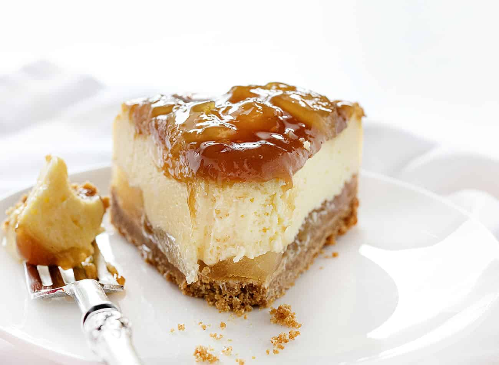

Cheesecake

Description
Perfect blend of cheesecake, caramel, and apple. Great for the fall or anytime else!
Ingredients
- graham cracker crumbs
- white sugar
- melted margarine
- wrapped caramels
- heavy whipping cream
- cream cheese
- white sugar
- eggs
Steps
- Preheat oven to 350 degrees F (175 degrees C). Grease a 9-inch springform pan.
- Combine graham cracker crumbs and 1 1/2 tablespoons sugar in a bowl; add margarine and mix well. Spoon mixture into the prepared pan and press into the bottom, forming a crust.
- Bake in the preheated oven until lightly browned, about 10 minutes. Remove pan from oven and reduce temperature to 325 degrees F (165 degrees C).
- Melt caramels and cream together in the top of a double boiler over simmering water, stirring frequently and scraping down the sides with a rubber spatula to avoid scorching. Remove from heat and cool slightly. Reserve 1 cup caramel for cheesecake filling and refrigerate the rest until serving time.
- Beat cream cheese together in a bowl using an electric mixer until smooth; add 1/2 cup white sugar and beat until combined, scraping sides and beaters as needed. Add sour cream and vanilla extract and beat until well combined. Add eggs and beat at low speed just until incorporated.
- Fold 1 cup caramel sauce and apples into cream cheese mixture; pour over the crust.
- Bake in the preheated oven for 15 minutes. Reduce oven to 275 degrees F (135 degrees C) and continue baking until center is mostly set, 75 to 90 minutes. Cool completely to room temperature; refrigerate until chilled, at least 1 hour.
- Heat reserved caramel sauce and drizzle over cheesecake.